5580C AIR BAG SYSTEM
- Path
- Descriptions > 55 ELECTRICAL EQUIPMENT > 5580 SPECIAL ACCESSORIES > 5580C AIR BAG SYSTEM
- Kind
- system description
- Applies to
- all engines; all production periods
- Interactive page
- https://sloeber94.github.io/elrnDB-fDbl/en/#/2582347
Applies to: engines: 1.4 8v, 1.6 16v, 1.3 JTD 16V, 1.9 JTD 8V; production: da 12/03; only with equipment: MY 2005
INTRODUCTION
The vehicle is equipped with an electronic control system that governs the acivation of specific containment devices in the event of frontal or side impact. The front protection system includes dual stage activation dual front Air Bags (driver and passenger), front seat belts with pretensioners, an additional impact detection sensor and a manual passenger Air Bag disabling switch.
The front protection system is capable of automatically adapting the passenger Air Bag activation parameters, depending on the seriousness of the impact; in effect, when the impact is reasonably serious, the electronic control unit only operates the first activation stage for the Air Bag preventing the introduction of energy that is not required for protecting the occupant.
Conversely, in the case of very severe impact, the control unit activates both stages to absorb most of the kinetic energy from the occupant's body before it strikes the dashboard.
An additional ECS “Early Crash Sensor” near the front crossmember also helps the electronic control unit to operate more quickly than a conventional system so that the airbag activation stage is completed before the occupants begin to move towards the dashboard and/or the steering wheel.
This sensor also detects underbody impacts or stresses which do not activate the Air Bags as there is no risk to the occupants.
The side protection system comprises two Side Bags on the front seats and two side impact sensors.
The air bag system components are illustrated below.
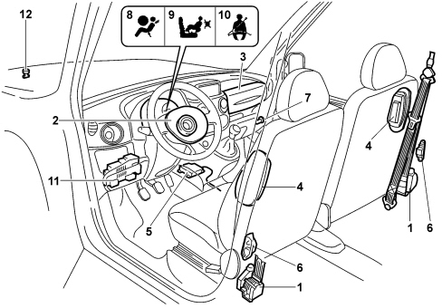
1. pretensioners
2. driver's bag
3. passenger bag
4. side bag
5. Air Bag control unit
6. R.S.U. satellite unit
7. passenger bag disabling switch
8. Air Bag failure warning light
9. passenger bag inhibition warning light
10. driver's seat belt not fastened warning light
11. K line connector
12. front impact sensor (E.C.S.)
A single electronic control unit manages all the systems:
- SEAT BELT PRETENSIONER SYSTEM
- SIDE BAG SYSTEM
- DRIVER'S AIR BAG SYSTEM
- PASSENGER AIR BAG SYSTEM (single or double)
CONTROL UNIT FASTENING DESCRIPTION
The fitting direction of the AIR BAG control units is shown by an arrow and MUST be respected.
Before replacing the control unit, make sure that it is compatible with the one removed by checking the number stamped on the label.
Fit the bolts in the order illustrated and tighten them. All the bolts should be tightened in sequence to a torque of 6.4 - 9.6 Nm to ensure the correct fastening of the control unit to the bodyshell.
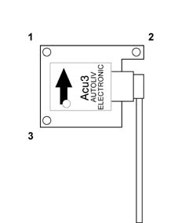
SEAT BELT PRETENSIONER SYSTEM
Section of pretensioners before and after activation.
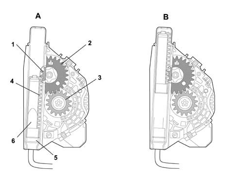
1. Toothed wheel
2. Toothed wheel
3. Toothed bush
4. Piston with rack
5. Pyrotechnic charge
6. Propellant
A. Before activation
B. After activation
COMPOSITION
This system is composed of the front inertia reel seat belts and electronically operated pyrotechnically activated pretensioners. The negative acceleration (or deceleration) electronic sensor is located inside the control unit and manages the intelligent warning light.
The pyrotechnic activation system is an integral part of the reel and thereby forms a single component that is secured in the vehicle pillar.
OPERATION
At the time a certain longitudinal negative acceleration (or deceleration) takes place that is sufficiently serious, an electromechanical sensor in the control unit records this condition and sends a command, via the power circuit, to the driver's pretensioner and the passenger pretensioner.
The electrical command primes the gas generator (5) pyrotechnic charges.
The combustion of the propellant (6) develops a chemical reaction that produces an (inert) gas. The gas pressure then generates a force that pushes the piston rack upward (4).
The upwards movement of the rack piston (4) rotates the toothed wheel (1) which is connected to the teeth (2). This toothed wheel (2), engaging with the toothed bush (3), changes the rotary movement of the chuck to the opposite direction of the belt winding, rewinding it by a few centimetres.
CONTROL UNIT AUTO-TEST
The failure warning light in the instrument panel comes on at the Key on for 4 secs. during the autotest stage for the control unit and the actual warning light.
After the 4 secs. have elapsed, the control unit carries out the fault diagnosis of the system continuously.
The AIR BAG failure warning light remains on after the 4 seconds of the check stage when:
- the control unit is not connected
- one of the two pretensioners is not connected,
- the supply voltage is interrupted,
- a fault is detected in the two seconds after the check stage.
The resistance between the vehicle electrical earth and the control unit should be R < 100 mOhm.
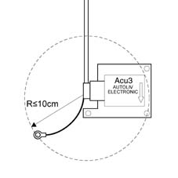
DRIVER'S AIR BAG SYSTEM
The driver's air bag system components are illustrated below.
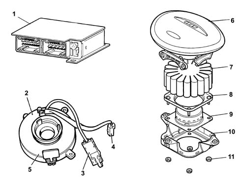
1. Electronic control unit
2. Clock spring
3. Air Bag electrical connection
4. Horn electrical connection
5. Safety key
6. Cover
7. Bag
8. Bag seal
9. Gas generator
10. Housing
11. Nuts
COMPOSITION
The driver's bag system consists of:
- Cover
- Bag
- Gas generator
- Clock spring
- Air Bag control unit
There is a support fastening to the steering wheel containing: the pyrotechnic device with the gas generator and folded bag, a cover with an area with fracture lines to facilitate the escape of the bag. There is a clock spring in the lower part between the steering wheel and the steering column switch unit which guarantees the electrical connection between the steering wheel and the Air Bag control unit.
OPERATION
All the components inside the control unit are subject to auto diagnosis.
The control unit also diagnoses the operation and the parameters listed below:
- BATTERY voltage,
- satellite sensors where fitted,
- front impact sensor,
- the electric part of the pyrotechnic charges depending on the system configuration.
Incorrect configurations are detected as an open circuit if the number of components is below the number planned. If the number is higher, this is not possible because the components that allow the diagnosis of additional lines are not there.
The control unit is equipped with a special condenser capable of storing an energy reserve to be used for operating the front bag pyrotechnic charges.
This energy reserve is available for around 200 ms following the failure of an electrical supply due to a collision and the disconnection of the baattery or a short circuit.
The pretensioners and the side bags (side bags protecting the head and the chest) receive a direct power supply and there is no energy reserve in the control unit for these devices.
The auto diagnosis is activated every time there is a key on for about 4 secs.
The control unit lights up the failure warning light for the same time if the microcontroller switches the warning light off after having carried out the check stage and not having detected any faults.
At the time of a sufficiently serious collision, the control unit, through its accelerometers, can record both longitudinal and transverse acceleration or deceleration.
When the figures measured exceed the pre-set level in the control unit map, the latter allows the activation of the pretensioners and then the driver's and passenger side air bags.
PASSENGER AIR BAG SYSTEM
The passenger bag system consists of:
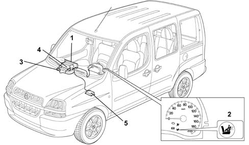
1. Twin bag
2. On warning light
3. On switch
4. Pyrotechnic charges (2)
5. Air Bag control unit
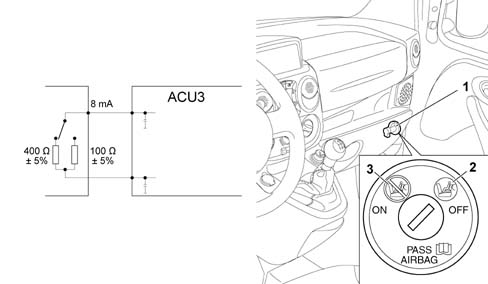
The passenger bag enabled/disabled status is determined by the switch on the right of the dashboard.
The switch is operated using the key in the ignition.
The Air Bag control unit for enabling the passenger bag should record a resistance of between 95 and 105 Ohm.
The resistance inhibition value is between 380 and 420 Ohm.
OPERATION
At the key on and during the first 4-6 seconds the Air Bag control unit tests the inhibitor switch.
If the resistance value is around 100 Ohm (bag ON) the control unit prepares for the operation of the passenger bag.
If the resistance value is around 400 Ohm (bag OFF the control unit prepares for the non operation of the passenger bag.
The passenger bag ON/OFF condition is easily recognized by the operation of the warning light in the instrument panel.
With the switch in the ON position the warning light flashes for a further 4 seconds, after the 4 seconds of the test at the key on (all OK, warning light off).
With the switch in the OFF position, the warning light remain on after the test at the key on.
If the inhibition system is broken, the error and the inhibition state are recorded, the failure and inhibition warning lights remain on constantly and only the passenger bag is not activated and in the case of a collision the pretensioners and the driver's bag will be activated.
If, after the key on and with the key inserted in the ignition, the user changes the status of the switch, the control unit records the event as a plausibility error and the inhibition status, causing the failure and inhibition warning lights to come on.
The passenger bag will not be activated if needed.
If the inhibition warning light is broken or the enabling/inhbition signal is outside of the set range, the passenger bag will be automatically inhibited by the control unit.
Transfer of operation of failure warning light to inhibition warning light
If the Air Bag system failure warning light is broken (LED or bulbs burnt out), the control unit inhibits the operation of the system and, at the same time, switches on the inhibition warning light at a frquency of 4 Hz to signal the failure warning light broken condition.
The resistance between the vehicle electrical earth and the control unit should be R < 100 mOhm.
SIDE BAG SYSTEM R.S.U. SATELLITE SENSOR (Remote Side Sensing Unit)
The Side Bags are illustrated in the diagram below.
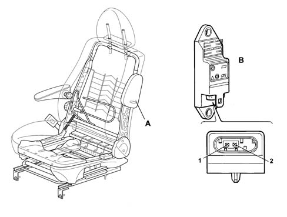
A. Side Bag
B. Satellite side impact sensors
1. Sensor signal
2. Sensor earth
COMPOSITION
The Side Bag modules are fitted on the front seat backrest, door side and the module cover can be seen.
The module comprises the following components:
- a bag.
- a gas generator that includes the studs for fastening the module.
- a pin for the earth connection.
- a casing, together with the cover, for housing the parts mentioned above.
- a cover on show.
The container for the satellite sensors is made from an insulating material with the connector built in.
The satellites have a centering pin to allow them to be correctly positioned which is secured with the threaded opening to the centre body pillar.
The Air Bag control unit manages the entire system.
The fitting position of the control unit and the satellite sensors MUST be adhered to. The centering pin for the sensors should be correctly inserted in the opening in the pillar.
The satellites should be installed with the connector facing the vehicle floor.
The satellites are fastened to the base of each centre pillar, one on the right side, one on the left side with a tightening torque of 6.4 - 9.6 Nm.
OPERATION
The control unit supplies the side sensors at the key on and they start the auto-test operation.
The auto-test is concluded by the sensors after a maximum of 1 second. The result of the internal test is sent to the control unit. If there is an error the control unit switches on the failure warning light. The sensors send repeated messages to the control unit until the next key on.
If the sensors do not detect errors within 1 second they do not send a serial code to the control unit.
If the sensors detect an error during the starting stage, it takes about 740 ms to transmit it to the control unit in the form of a serial code.
At the time of a sufficiently serious side collision, the control unit receives the signal from the satellite sensor concerned via the transverse negative acceleration (or deceleration) serial line. If the control unit detects this condition through its internal sensor, it gives a command to activate the gas generator which, through a chemical reaction, creates a pressure that it sufficiently strong to inflate the bag on the side where the negative acceleration (or deceleration) signal is coming from.
FRONT IMPACT SATELLITE SENSOR (E.C.S.)
The location of the ECS front impact sensor is described below
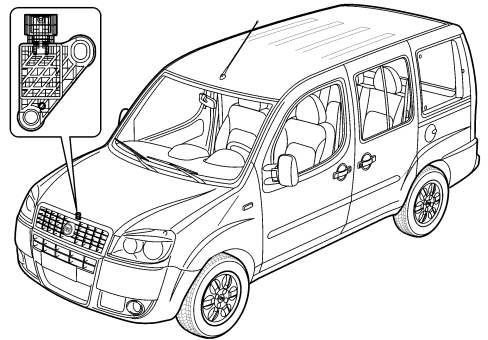
Specifications
The additional ECS “Early Crash Sensor” at the end of the front crossmember also helps the electronic control unit to operate more quickly than a conventional system so that the airbag activation stage is completed before the occupants begin to move towards the dashboard and/or the steering wheel.
This sensor also detects underbody impacts or stresses which do not activate the Air Bags as there is no risk to the occupants.
AIR BAG CONTROL UNIT PIN OUT
Control unit side view.
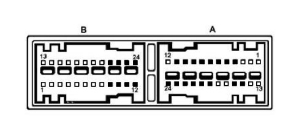
A - CONNECTOR on dashboard wiring
B - CONNECTOR at rear wiring
Connector A PIN OUT
Pin | Function |
|---|---|
1 | N.C. |
2 | N.C. |
3 | N.C. |
4 | Front impact sensor (+) |
5 | Passenger side bag deactivation (+) |
6 | Passenger side bag deactivation (-) |
7 | Diagnostic tester line K |
8 | +15 Supply |
9 | Passenger side impact sensor (+) |
10 | Driver's side impact sensor (+) |
11 | Air Bag failure warning light |
12 | N.C. |
13 | N.C. |
14 | N.C. |
15 | Passenger Air Bag disabled warning light |
16 | Earth |
17 | N.C. |
18 | N.C. |
19 | Passenger side Air Bag (2nd stage) (-) |
20 | Passenger side Air Bag (2nd stage) (+) |
21 | Driver's Air Bag (-) |
22 | Driver's Air Bag (+) |
23 | Passenger side Air Bag (1st stage) (-) |
24 | Passenger side Air Bag (1st stage) (+) |
Connector B PIN OUT
Pin | Function |
|---|---|
1 | N.C. |
2 | N.C. |
3 | N.C. |
4 | N.C. |
5 | N.C. |
6 | N.C. |
7 | N.C. |
8 | N.C. |
9 | Driver's front seat belt pretensioner (+) |
10 | Passenger front seat belt pretensioner (+) |
11 | Driver's front seat belt pretensioner (-) |
12 | Passenger front seat belt pretensioner (-) |
13 | N.C. |
14 | N.C. |
15 | N.C. |
16 | N.C. |
17 | N.C. |
18 | N.C. |
19 | N.C. |
20 | N.C. |
21 | Passenger side bag (+) |
22 | Passenger side bag (-) |
23 | Driver's Side Bag (+) |
24 | Driver's Side Bag (-) |
Applies to: engines: 1.2 8v, 1.6 16v, 1.3 JTD 16V, 1.9 JTD 8V, 1.9 DIESEL; all production periods
The diagram below illustrates the Air Bag system components
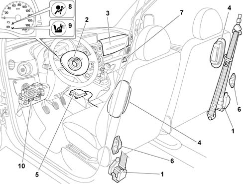
1 pretensioners
2 driver's Air Bag
3 passenger Air Bag
4 side bag
5. control unit
6. R.S.U. satellite units
7. passenger Air Bag disabling switch
8 failure warning light
9 passenger Air Bag inhibitor warning light
10 line K connector
One single control unit manages all these systems:
- SEAT BELT PRETENSIONER SYSTEM
- SIDE BAG SYSTEM
- DRIVER'S AIR BAG SYSTEM
- PASSENGER AIR BAG SYSTEM (single or dual)
Control units for TRIM LEVEL VERSIONS
Each control unit has an idenfication label. The following control units are available:
- A.C.U.3-C03 control unit which manages the front pretensioners / driver's Air Bag.
- A.C.U.3-C05 control unit which manages the front pretensioners / driver's Air Bag / passenger Air Bag.
- A.C.U.3-R07 control unit which manages the front pretensioners / Driver's Air Bag / passenger Air Bag.
The operation of the system for the vehicle in question depends solely on the type of electronic control unit used.
The A.C.U3-R07 control unit is assisted by two satellite units or negative transverse acceleration (or deceleration) sensors. The positive and negative acceleration sensors send a signal to the control unit. The control unit records deceleration and commands the priming of the pyrotechnic charges.
All the A.C.U3 control units manage the accumulation of energy for the front bags and memorize both fault codes and crash codes. The operation of the red warning light in the instrument panel is intelligent.
The control unit only has to be replaced after the pretensioners or the Side Bags have been activated three times.
The control unit must always be replaced if the front Air Bags are activated.
DESCRIPTION OF CONTROL UNIT FASTENING
The position the AIR BAG control units should be fitted in is shown by an arrow and MUST be observed.
Before replacing the control unit, make sure that the new one is compatible by checking the design number on the label.
Fit the bolts and tighten them in order the illustrated in the diagram. All the bolts should be tightened, in order, to a torque of 6.4 - 9.6 Nm to ensure that the control unit is correctly secured to the bodyshell.
AIR BAG CONTROL UNIT CONNECTORS
The control unit connectors are the twin wire 2 x 24 pin AMP type with 12 short circuit bars. There are 3 types of connector, one for each version of control unit, with different colours and different mechanical foolproof polarity:
- CONTROL UNIT ACU3-C03 = BLACK CONNECTOR
- CONTROL UNIT ACU3-C05 = BROWN CONNECTOR
- CONTROL UNIT ACU3-R07 = ORANGE CONNECTOR
SEAT BELT PRETENSIONER SYSTEM
Cross section of pretensioners before and after activation
1 Ring gear
2 Ring gear
3 Toothed bush
4 Rack piston
5. Pyrotechnic charge
6. Propellant
A. Before activation
B. After activation
COMPOSITION
This system consists of inertia reel front seat belts with electrically controlled, pyrotechnically activated pretensioners. The negative acceleration (or deceleration) electronic sensor is located inside the control unit which manages the intelligent warning light.
The pyrotechnic activation system is an integral part of the reel and thereby creates a single component which is fitted to the vehicle pillar.
OPERATION
The moment a longitudinal negative acceleration (or deceleration) of sufficient magnitude takes place, an electro-mechanical sensor in the control unit records this condition and sends a command from pins 21-22, via the power circuit, to the driver's pretensioner and from pins 23-24 to the passenger pretensioner.
The electrical control primes the gas generator pyrotechnic charges (5).
The burning of the propellant (6) produces a chemical reaction creating (inert) gas whose pressure creates a force which thrusts the rack pinion (4) upwards.
The upwards movement of the rack pinion (4) rotates the ring gear (1) which is connected to the ring gear (2). The ring gear (2) meshes with the toothed bush (3) changing the rotary movement of the spindle to the opposite direction to the unwinding of the seat belt, rewinding it by several centimetres.
CONTROL UNIT AUTO-TEST
The warning light in the instrument panel comes on at the Key on for about 4 secs. to indicate the control unit and warning light autotest.
After 4 seconds the control unit carries out the continuous diagnosis of the system.
The AIR BAG failure warning light remains on after the 4 seconds of the check stage when:
- the control unit is not connected
- one of the two pretensioners is not connected,
- the supply voltage is interrupted,
- a fault is detected in the two seconds after the check stage.
The resistance between the vehicle's electrical earth and pin 11 of the control unit must be R £ 100 mW
DRIVER'S AIR BAG SYSTEM
The diagram below illustrates the driver's Air Bag system components.
1 Electronic control
2 Clock spring
3 Air Bag electrical connection
4 Horn electrical connection
5. Safety device
6. Cover
7. Bag
8 Bag retaining ring
9 Gas generator
10 Housing
11. Nuts
COMPOSITION
The driver's Air Bag system consists of:
- Cover
- Bag
- Gas generator
- Clock spring
- A.C.U3 control unit
A housing containing the following is fastened to the steering wheel: the pyrotechnic device with gas generator and folded bag, a cover with a pre-breakage area to facilitate the escape of the bag. In the lower part, between the steering whel and the lights switch unit, there is a clock spring which guarantees the electrical connection between the steering wheel and the A.C.U3.
OPERATION
All the components inside the control unit are subject to autodiagnosis.
The control unit also diagnoses the functions and parameters listed below:
- BATTERY voltage,
- satellite sensors (where fitted),
- the electrical part of the pyrotechnic charges depending on the configuration of the system.
Incorrect configurations are detected as an open circuit, if the number of components is below the number planned. If the number is higher, this is not possible because the components which make it possible to diagnose the additional lines are missing.
The control unit is equipped with a special condenser, capable of storing an energy reserve to be used for operating the front Air Bag pyrotechnic charges.
This reserve energy is available for around 200 ms. from the possible electrical supply failure due to a collision and the consequent disconnection of the battery or short circuit.
The pretensioners and the Side Bags (protecting the head and chest) are supplied directly and there is no reserve energy in the control unit for these devices.
The auto diagnosis is activated at each Key on for a time of @ 4 s.
At the same time the control unit lights up the warning light and if, after having carried out the check, no faults are detected, the warning light goes out.
At the time of a collision of a sufficient magnitude, the control unit can record both longitudinal or transverse acceleration or deceleration by means of the accelorometers.
When figures are recorded above the pre-set level in the control unit map, the pretensioners and later the driver's and passenger front Air Bags are activated.
COMPOSITION
The passenger Air Bag system consists of:
1 Dual bag
2 On warning light
3 On switch
4 Pyrotecnic charges (2)
5. A.C.U3 control unit
COMPOSITION
-
COMPOSITION
The enabling / disabling of the passenger Air Bag is determined by the switch on the right hand side of the dashboard.
The switch is activated with the key in the ignition.
The passenger Air Bag control unit (A.C.U3-C05 or A.C.U3-R07 depending on the version) should record a resistance value of 95 - 105 O for the enablement.
For disablement, the resistance value should be 380 - 420 O.
OPERATION
At the key on and during the first 4 - 6 seconds, the A.C.U3 control unit tests the inhibitor switch.
If the resistance value is @ 100 O (bag ON), the control unit prepares for the operation of the passenger Air Bag.
If the resistance value is @ 400 W (bag OFF), the control unit prepares for non-operation of the passenger Air Bag.
The passenger Air Bag ON/OFF condition can be easily recognized by the operation of the special warning light in the instrument panel.
With the switch ON, the warning light flashes for 4 seconds after the 4 seconds of the test at Key on (all O.K. warning light off).
With the switch OFF, the warning light remains on after the test at Key on.
If the inhibitor system is broken, the error and the inhibition state are recorded, the failure and inhibitor warning lights are on constantly and only the passenger Air Bag will not be activated in the case of a crash because the driver's Air Bag and pretensioners will be.
If, after a key on with the ignition switched on, the user changes the status of the switch, the control unit records this as a plausibility error causing the failure and inhibitor warning lights to come on.
The passenger Air Bag will not be activated when required.
If the inhibitor warning light is broken or the enabling/disabling signal is outside of the operating range, the passenger Air Bag will automatically be disabled by the control unit.
Transferring failure warning light operation to disabling warning light
If the Air Bag system failure warning light is broken (LED or bulb burnt out), the control unit will inhibite the operation of the system and, at the same time, will switch on the disabling warning light at a frequency of 4Hz to signal the failure warning light fault.
The resistance between the vehicle's electrical earth and pin 11 of the control unit must be R £ 100 O
SIDE BAG SYSTEM R.S.U. SATELLITE SENSORS (Remote Side Sensing Unit)
The diagram below illustrates the SIDE BAGS.
A. Side Bag
B. Side impact satellite sensor
1 Sensor signal
2 Sensor earth
COMPOSITION
The SIDE BAG modules are fitted on the door side of the front seat backrest with the module cover in view.
The module consists of the following components:
- a bag.
- a gas generator which incorporates the studs for fixing the module.
- a pin for connecting the earth.
- a casing for housing the parts mentioned above together with the cover.
- a cover.
The satellite sensor container is made from an insulating material with the connector incorporated.
The satellites have a centring pin to ensure that they are correctly positioned; this pin is fixed in the threaded opening in the bodyshell centre pillar.
The A.C.U3-R07 manages the entire system.
The control unit and the satellite sensors MUST be fixed in the correct position. The sensor centring pin should be correctly inserted in the opening in the pillar.
The satellites should be installed with the connector facing the floor of the vehicle.
The satellites are fastened to the base of each centre pillar, one on the right side and one on the left side and tightened to a torque of 6.4 - 9.6 Nm.
OPERATION
At the KEY ON, the control unit supplies pin 2 of the side sensors and they initiate the auto-test operation.
The sensors conclude the auto-test within a maximum period of 1 second. The result of the test is transmitted to the control unit. In case of an error, the control unit lights up the failure warning light. The sensors send repeated messages to the control unit until the next KEY ON.
If the sensors do not detect errors within 1 second they do not send a serial code to the control unit.
If the sensors detect an error during the starting stage, in order to transmit it to the control unit in the form of a serial code it takes @ 740 ms.
At the time of a side impact of a certain severity, the control unit receives the transverse negative acceleration (or deceleration) serial line signal from pin 2 of the satellite sensor concerned. If the control unit detects the same condition through its internal sensor, it gives a power command to activate the gas generator whose chemical reaction creates a pressure sufficient to inflate the bag on the side where the negative acceleration (or deceleration) signal is coming from.
COMPOSITION
The diagram below illustrates the components connected to the failure warning light.
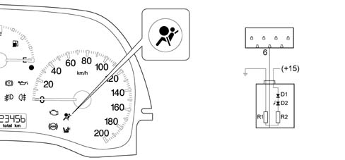
1 Warning light in instrument panel
2 Integrated circuit in instrument panel
3 Signal transmitted by the A.C.U3
OPERATION
The operation of the AIR BAG systems failure warning light is known as intelligent because it is also capable of signalling a failed connection with the actual control unit.
The diagram shows the AIR BAG warning light in the instrument panel. The LED (D2) is earthed by two resistors in series (R1-R2). The LED anode is supplied by a diode (D1) controlled by the ignition +15, whilst the the control unit control pin is connected between the two resistances (R1-R2)
At the Key On, the control unit earths pin 6 for 4 seconds and checks the system components and the actual warning light.
If the control unit is not connected to the system or there is a break in the warning light control line, the warning light comes on at the Key On through the connection to earth and the resistances (R1-R2).
Depending on the trim level of the vehicle, if there is also a passenger Air Bag disabled warning light, the failed operation of the failure warning light is signalled by the flashing at a frequency of 4 Hz. of the disabling warning light.
A.C.U3-R07 CONTROL UNIT CONNECTOR SIDE PIN OUT
Control unit side view
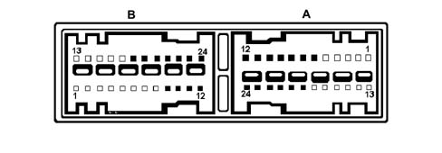
A. Connector A (Orange)
1 N.C.
2 N.C.
3 N.C.
4 N.C.
5. PASSENGER AIR BAG DISABLED WARNING LIGHT
6. FAILURE WARNING LIGHT
7. + PASSENGER MANUAL DEACTIVATION
8 PASSENGER MANUAL DEACTIVATION -
9 N.C.
10 LINE K
11. EARTH
12. + 12 V CONTROLLED BY IGNITION
13. N.C.
14. N.C.
15. N.C.
16. N.C.
17. N.C.
18. N.C.
19. + PASSENGER BAG (2
20. - PASSENGER BAG (2
21. - PASSENGER BAG (1
22. + PASSENGER BAG (1
23. - DRIVER'S BAG
24. + DRIVER'S BAG
B. Connector B (Orange)
1 N.C.
2 N.C.
3 N.C.
4 N.C.
5. N.C.
6. N.C.
7. N.C.
8 N.C.
9 + R.S.U. RIGHT
10 - R.S.U. RIGHT
11. + R.S.U. LEFT
12. - R.S.U. LEFT
13. N.C.
14. N.C.
15. N.C.
16. N.C.
17. + LEFT SIDE BAG
18. - LEFT SIDE BAG
19. + RIGHT SIDE BAG
20. - RIGHT SIDE BAG
21. + DRIVER'S PRETENSIONER
22. - DRIVER'S PRETENSIONER
23. + PASSENGER PRETENSIONER
24. - PASSENGER PRETENSIONER
A.C.U30C05 CONTROL UNIT CONNECTOR SIDE PIN OUT
Control unit side view
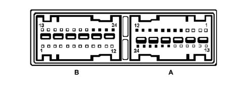
A. Connector A (Brown)
1 N.C.
2 N.C.
3 N.C.
4 N.C.
5. PASSENGER AIR BAG DISABLED WARNING LIGHT
6. FAILURE WARNING LIGHT
7. + PASSENGER MANUAL DEACTIVATION
8 - PASSENGER MANUAL DEACTIVATION
9 N.C.
10 LINE K
11. EARTH
12. + 12 V CONTROLLED BY IGNITION
13. N.C.
14. N.C.
15. N.C.
16. N.C.
17. N.C.
18. N.C.
19. + PASSENGER BAG (2
20. - PASSENGER BAG (2
21. - PASSENGER BAG (1
22. + PASSENGER BAG (1
23. - DRIVER'S BAG
24. + DRIVER'S BAG
B. Connector B (Brown)
1 N.C.
2 N.C.
3 N.C.
4 N.C.
5. N.C.
6. N.C.
7. N.C.
8 N.C.
9 N.C.
10 N.C.
11. N.C.
12. N.C.
13. N.C.
14. N.C.
15. N.C.
16. N.C.
17. N.C.
18. N.C.
19. N.C.
20. N.C.
21. + DRIVER'S PRETENSIONER
22. - DRIVER'S PRETENSIONER
23. + PASSENGER PRETENSIONER
24. - PASSENGER PRETENSIONER
A.C.U3-CO3 CONTROL UNIT CONNECTOR PIN OUT
Control unit side view
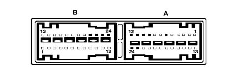
A. Connector A (Black)
1 N.C.
2 N.C.
3 N.C.
4 N.C.
5 N.C.
6 FAILURE WARNING LIGHT
7 N.C.
8 N.C.
9 N.C.
10 LINE K
11 - EARTH
12 + 12 V CONTROLLED BY IGNITION
13 N.C.
14 N.C.
15 N.C.
16 N.C.
17 N.C.
18 N.C.
19 N.C.
20 N.C.
21 N.C.
22 N.C.
23 - DRIVER'S BAG (1
24 + DRIVER'S BAG (1
B. Connector B (Black)
1 N.C.
2 N.C.
3 N.C.
4 N.C.
5 N.C.
6 N.C.
7 N.C.
8 N.C.
9 N.C.
10 N.C.
11 N.C.
12 N.C.
13 N.C.
14 N.C.
15 N.C.
16 N.C.
17 N.C.
18 N.C.
19 N.C.
20 N.C.
21 + DRIVER'S PRETENSIONER
22 - DRIVER'S PRETENSIONER
23 + PASSENGER PRETENSIONER
24 - PASSENGER PRETENSIONER